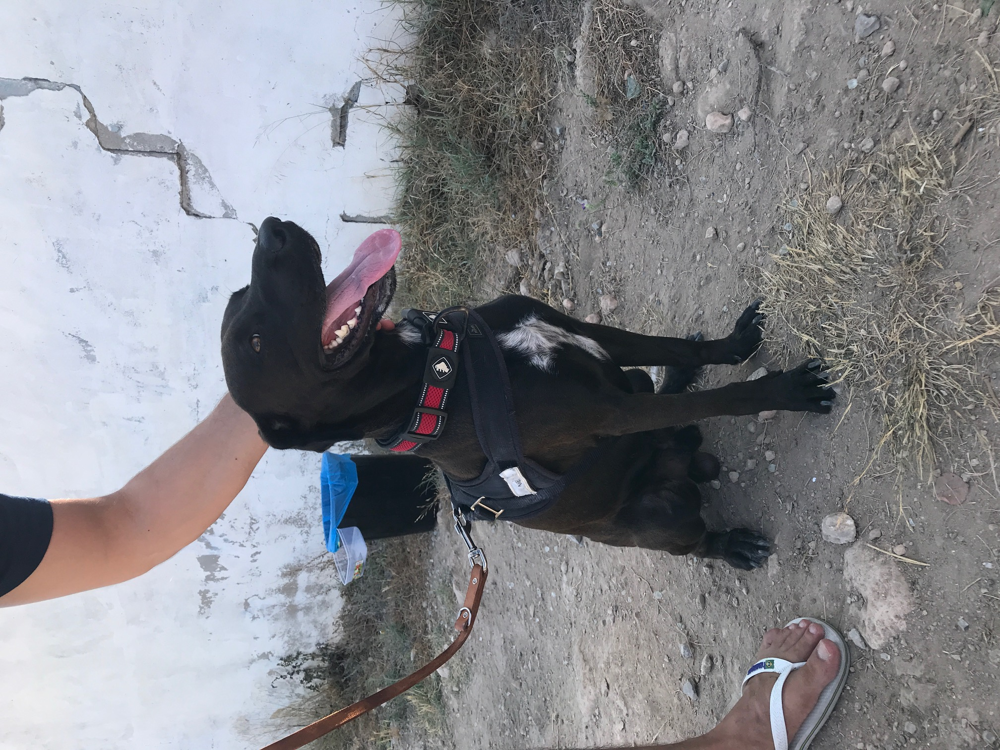

Rufus - den herrelöse hunden från Spanien som fick ett nytt liv i Sverige
Första mötet med Rufus
Jag och min sambo brukar spendera vår semester på sommaren i Spanien då hans familj har lägenheter där. Sommaren 2018 tänkte vi att vi kunde spendera vår semetser där även detta år och så blev det. I staden där lägenheten är, i Torrevieja, så finns det ett hundstall som vi tänkte att vi kunde volontärarbeta på då vi är morgonpigga människor och vi visste att hundarna på hundstallet ska rastas innan kl 12.00 då det blir alldeles för varmt. Andra dagen på hundstallet så kom en arbetare in med Rufus, som de döpte till Brillante som betyger Shiny på engelska, på grund av hans glansiga päls. Vi blev genast förälskade i Brillante och ville rasta honom dag efter dag. Brillante var så glansig och glad, trots att han bara var skinn och ben och hade väldigt långa klor som måste ha gjort ont. För varje dag som gick så fattade vi mer och mer tycke för Brillante då vår kemi med honom var perfekt.

Beslutet att adoptera
Både jag och min sambo är uppvuxna med hundar, allt från Jack Russel, Pitbull till Dobberman. Vi tingade en hundvalp år 2016 av rasen American Bully XL. Tingandet skedde innan parningen ens var genomförd, dessvärre blev det inte tillräckligt många valpar och vi blev utan. Detta var ett hundköp vi planerat i flera år och kände oss äntligen redo för det. Men det blev tyvärr inte som väntat. Efter det lade vi tankarna på hund lite på is, tills vi träffade Brillante på hundstallet i Spanien. Vi båda blev förälskade i honom och en dag sa vi bara "Vi tar hem honom till Sverige". Dagen därpå frågade vi en ansvarig på hundstallet hur vi skulle gå tillväga för att ta hem Brillante. Det visade sig att adoptionen var gratis, chippning och vaccin var också gratis, passet var gratis och det enda vi behövde betala var cirka 180SEK för en veterinärkoll. Personalen reserverade Brillante och dagen där på tog vi honom till veterinären där han blev chippad och undersökt och fick alla sina vaccin. Han fick även sitt pass så att han kunde få flyga med till Sverige. Vi bad hundstallet att ha kvar honom hos de tills det att vi skulle åka hem till Sverige av den anledningen att han börjat vänja sig på hundstallet och vi ansåg inte att det var bra att ta hem honom till lägenheten och sedan flytta honom till flygplatsen och så då det kunde blir stressigt. Varje dag besökte vi hundstallet för att få spendera tid med honom och lära känna honom ännu mer och ha kul med honom och allt kändes helt perfekt.
Resan till Sverige
Dagen med stort D var äntligen här. Vi hämtade hem Brillante från hundstallet samma morgon som vi skulle flyga hemåt, vi åkte förbi och köpte den största hundburen vi kunde hitta då EU har regler på hur hundars burar ska vara vid flygningar. Vi var hemma i lägenheten i några timmar med honom och gosade och lekte och han var så snäll och så lycklig. Min sambos morfar frågade om han verrkligen skulle heta Brillante och vi svarade nej, men att vi inte hade kommit på något namn. Då föreslog han Rufus och då tittade vi på honom och sa "Rufus" och han började genast att vifta på svansen, så det blev Rufus. Vi var lite nervösa inför flygningen då vi skulle mellanlanda i Oslo i 11 timmar. Han var så duktig och lugn och lät oss till och med att använda honom som huvudkudde när vi ville vila. När vi äntligen kom till Sverige så blev vi upphämtade på Arlanda av min pappa och vi åkte bil hem till Hammarby Sjöstad och Rufus satt framme i mitt knä och spanade ut på allt och var så nöjd.
Livet i Sverige
Det första vi gjorde var att gå och köpa bra mat till Rufus så att han skulle få lite mer kött på benen. Och som han älskade maten, han glupsade i sig den på 2 sekunder och det gör han fortfarande, han älskar sin mat. Han älskar alla hundar han möter på promenad och alla människor. Och alla hundar och människor älskar honom. Han får så mycket kärlek och han ger så mycket kärlek och man har aldrig en ensam eller tråkig stund nu. Rufus förgyller hela livet med sin närvaro och att adoptera honom var det absolut bästa vi någonsin hade kunnat göra.
Vem är jag?
Mitt namn är Ida, jag är i skrivande stund 24 år gammal och bor i Hammarby Sjöstad i södra Stockholm tillsammans med min sambo Joao och vår hund Rufus. Jag studerar till webbredaktör vid Högskolan i Borås. Jag har tidigare studerat en hel del juridik och marknadsföring och har arbetat inom e-handel på ett litet, familjärt klädesföretag där jag nu jobbar extra under studieperioden.
Varför adoption var det enda rätta för oss
6 anledningar till varför vi valde att adoptera
- Vi räddar ett liv
- Vi stödjer inte så kallade "backyard breeders"
- Vi hjälper till att minska överpopulationen och mängden hundar utan hem
- Vi stödjer en viktig välgörenhetsorganisation
- Vi inspirerar andra att göra likadant
- Vi vet hur viktigt arbetet med djurhem är
Adopt, don't shop
10 anledningar till varför du bör adoptera ett djur från ett djurhem
- Du räddar ett liv
- Du stödjer inte "bakgårds uppfödare"
- Du hjälper till att stoppa överpopulation
- Du kanske hittar din bästis
- Du får fördelarna med ett äldre djur
- Du får hjälp av djurhemmets personal
- Du stödjer en välgörenhetsorganisation
- Du adopterar ett friskt djur
- Du inspirerar andra att göra likadant
- Du kommer att få så mycket kärlek
Rufus finns på Instagram!
Följ Rufus på Instagram för att se vad han pysslar med om dagarna, vilka hyss han hittar på och vilka kompisar han busar runt med. Klicka på knappen nedan för att hitta honom på Instagram.